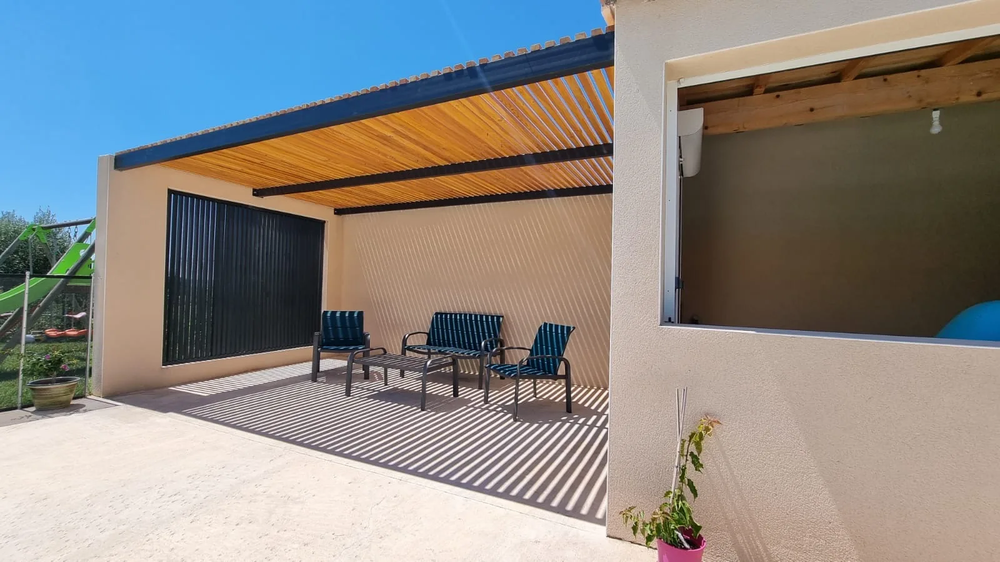

Un pool house réussi, c'est un espace de vie à part entière : un coin à l'ombre pour se poser entre deux baignades, protégé du soleil de l'après-midi et à l'abri des regards. À Caveirac, à quelques kilomètres de Nîmes, les propriétaires souhaitaient prolonger leur pool house par une terrasse couverte, ouverte sur la piscine et la campagne gardoise. FMG Metal Studio a imaginé pour eux deux ouvrages complémentaires : une pergola et un claustra, conçus sur mesure et accordés d'une même teinte.
L'enjeu : s'adapter à un bâti existant
Un pool house n'offre jamais une page blanche. L'ouvrage métallique doit composer avec les murs, les ouvertures et les usages déjà en place. Ici, plusieurs contraintes guidaient le projet :
- Une terrasse encadrée par deux murs : d'un côté le pool house, de l'autre un mur maçonné indépendant ; la pergola devait trouver ses appuis entre les deux.
- Un espace libre au sol : les propriétaires voulaient une terrasse dégagée, sans obstacle pour circuler et aménager le salon extérieur.
- Une ombre maîtrisée : filtrer le soleil du Gard tout en gardant de la lumière et de la ventilation.
- L'intimité : fermer la baie ouverte dans le mur latéral sans pour autant créer une paroi aveugle.
Une pergola portée entre deux murs
Notre réponse : une pergola sans aucun poteau. Ses poutres en acier prennent appui d'un mur à l'autre et libèrent entièrement la terrasse. Sur cette structure, un claustra bois en Douglas traité forme la couverture : ses lames régulièrement espacées filtrent la lumière et dessinent au sol et sur les murs un jeu d'ombres rayées qui évolue au fil de la journée. L'air circule librement, et la terrasse reste agréable même au cœur de l'été.
Le Douglas, essence résineuse appréciée en extérieur, a été traité pour résister aux intempéries ; son ton chaud apporte de la douceur sous la structure métallique. Travailler sans poteau demande une conception précise : les sections des poutres acier, leurs fixations et leurs appuis sont dimensionnés pour franchir la portée sans fléchir, tout en gardant une ligne fine et épurée en rive de toiture.

Un claustra aluminium à lames verticales
Dans le mur latéral, une grande baie ouverte sur le jardin a été habillée d'un claustra sur mesure en aluminium à lames verticales, encadré par la maçonnerie. L'aluminium, léger et résistant à la corrosion, est bien adapté à l'environnement d'une piscine. Il protège la terrasse du vent et des regards tout en laissant passer l'air et la lumière. Vu de l'extérieur, il donne au pool house une façade graphique, en écho aux lignes de la pergola.
Une finition thermolaquée RAL 7016
La structure acier de la pergola et le claustra aluminium ont été thermolaqués en RAL 7016, un gris anthracite qui souligne les lignes de l'ouvrage, contraste avec l'enduit clair du pool house et répond au ton chaud du Douglas. Au-delà de l'esthétique, le thermolaquage offre une finition homogène et durable, adaptée à un ouvrage exposé au soleil et à l'environnement d'une piscine.
- Ouvrages
- Pergola et claustra sur mesure
- Pergola
- Acier thermolaqué, sans poteau, portée entre deux murs
- Couverture
- Claustra bois Douglas traité
- Claustra
- Aluminium thermolaqué, lames verticales
- Finition
- Thermolaquage RAL 7016 (acier et aluminium)
- Projet
- Pool house, maison particulière
- Lieu
- Caveirac, Gard (30)
Des extérieurs dessinés sur mesure
Ce projet illustre notre approche des aménagements extérieurs : pergolas, claustras, garde-corps et portails conçus pour un lieu précis, dans le respect de l'architecture existante et des usages de chacun. Autour de Nîmes et partout dans le Gard, nous accompagnons les particuliers qui souhaitent faire de leur terrasse ou de leur pool house un véritable lieu de vie.
Vous avez un projet de pergola ou de claustra ? Découvrez nos réalisations ou parlons de votre projet.